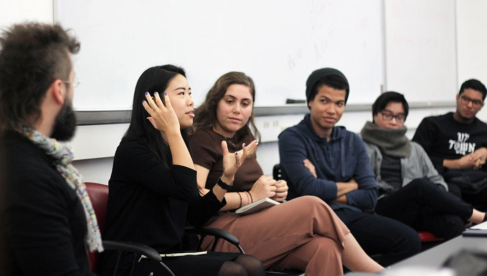

EDM, Electronic Design and Multimedia
The Robinson Center for Graphic Arts and Communication Design at the CCNY Art Department
INTERN
Internships
Students are encouraged to take advantage of the wealth of resources offered by New York City through internships at leading design studios, new-media web-related companies, video production houses, 3D animation studios, and other industry enterprises. These valuable opportunities often lead to permanent employment. Students are encouraged to participate in as many internships as they can to make industry connections and bridge alliances between the EDM classroom and the competitive design industry.ART 39598 INTERNSHIP AS INDEPENDENT STUDY: A reminder, EDM students can take up to two internships for EDM elective credit using the ART 39598: Internship as Independent Study course designation on CUNYfirst. Each ART 39598 Internship credit will count as 3.0 credit hours and must be pre-approved by an EDM full time faculty mentor. Paperwork must be obtained from and returned to Suerynn Lee, Art Academic Advising Specialist, no later than two weeks prior to the registration cutoff for the semester in which you wish to obtain internship credit. (Retroactive internship credits will not be awarded). The current faculty advisor for Internships is Professor Sherry Muyuan He who wil advise on Internships.
Please let Professor Sherry Muyuan He know that you're interested in completing an internship by filling out the online internship application form and also sending her an email describing your skills and interest.
If you are interested in participating in an internship, read the Internship FAQ.
Download the Internship Procedures packet PDF which has copies of the forms to fill out for students and internship employers.
You may also contact the CCNY Career & Professional Development Institute which is a great resource for internship connections.
EDM INTERNSHIP SCHOLARSHIPS are available!
$1200 INA SALTZ SCHOLARSHIPS and $1000 JEROME AND BERNARD ROBINSON PAY-IT-FORWARD SCHOLARSHIPS are available for merit-based EDM students completing unpaid, for-credit internships (students must register for the ART 39598 Internship as Independent Study course on CUNYfirst to be eligible). These scholarships are determined by EDM faculty on an annual-basis and selected from students meeting the above criteria. Please contact EDM Internship Faculty Mentor and Professor Sherry Muyuan He via email (mhe(at)ccny.cuny.edu) if you have questions.Students in the Electronic Design & Multimedia Program have interned at:
- AOL.com
- Anthropologie
- Bridal Guide
- Carnegie Fabrics
- CBS
- Cosmo Girl, Hearst
- Columbia University Medical School
- Details (Condé Nast)
- Discovery Communications
- Disney Adventures (Disney/ABC Inc.)
- Dr. Oz Magazine, Hearst
- Eyebeam Digital Museum
- The Food Network Magazine
- Fitness Magazine
- Good Housekeeping Magazine
- Hallmark magazine
- HBO
- IDEO.org
- Joan Mitchell Foundation
- Kaleidoscope Imaging
- LaMusica.com
- Marvel Comics
- Mayor’s Office of Data Analytics (MODA)
- Mayor's Office of Immigrant Affairs
- Mayor's Office of Media and Entertainment
- Museum of the City of New York
- MTV Networks
- Men's Journal (Wenner Media)
- MTA Transit Authority Digital Video Unit
- NBC/Universal
- New York Historical Society
- New York Women's Chamber of Commerce
- Nickelodeon
- NYC Department of Transportation
- OUT/The Advocate
- Pixar
- Popular Science Magazine
- Prevention Magazine
- Purgatory Pie Press
- Queens Historical Society
- Reader's Digest
- Rolling Stone
- Seed Magazine
- Sci-Fi Channel
- Scholastic, Inc.
- SCOPE Art Fair, Basel
- Sircle Media
- Smart Money Magazine
- Society of Publication Designers (SPD)
- Sony Music
- Sports Illustrated Magazine
- Stencil1
- Sugar Hill Children's Museum of Art & Storytelling
- Teen People Magazine (Time, Inc.)
- This Old House Magazine
- Time, Inc.
- Titmouse Animation Studio
- Totem Brooklyn
- Viacom
- Vibe Magazine (Vibe/Spin Ventures)

Former EDM students discuss their internships, how to locate them, and strategies for successful internship applications and professional practice during an EDM Club Internship FAQ Panel Discussion.